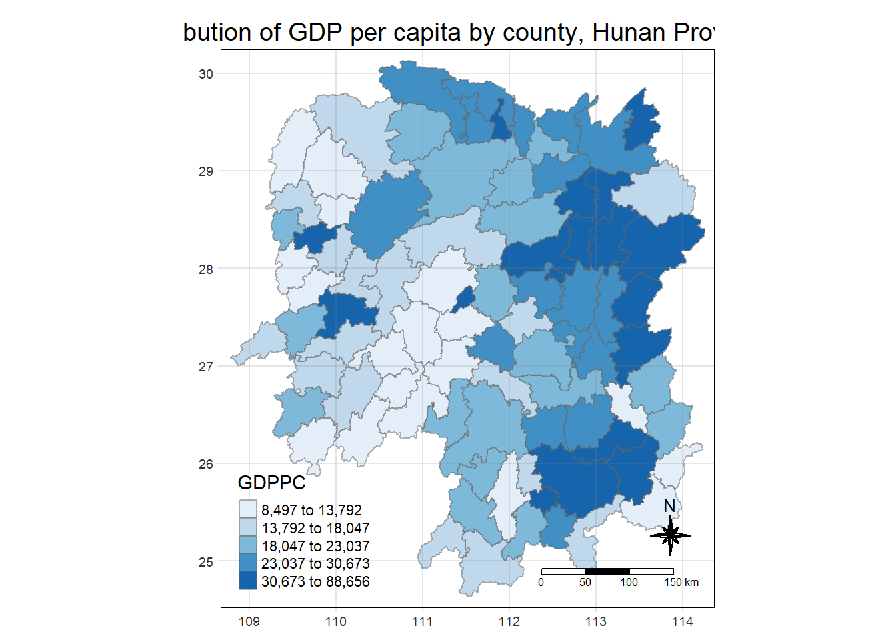

pacman::p_load(sf, tidyverse, sfdep, tmap, plotly, Kendall)In-class Exercise 5
R packages
Note
Instead of using spdep, we are now using sfdep, which is the new version of spdep. sfdep is an sf version of spdep, able to read the sf layer and skipping the conversion of sf objects to ppp objects.
Data Import and Wrangling
Geospatial
hunan <- st_read(dsn = "data/geospatial",
layer = "Hunan")Reading layer `Hunan' from data source
`C:\OdeliaPeh\IS415-GAA-2024\In-class_Ex\In-class_Ex05\data\geospatial'
using driver `ESRI Shapefile'
Simple feature collection with 88 features and 7 fields
Geometry type: POLYGON
Dimension: XY
Bounding box: xmin: 108.7831 ymin: 24.6342 xmax: 114.2544 ymax: 30.12812
Geodetic CRS: WGS 84
Note
Check whether the bounding box is in decimal degrees or not. If it is in decimal degrees it is in geodetic crs and not projected crs.
Note
Make sure that the geometric type of the file is matched by all of the data points!
Aspatial
hunan2012 <- read_csv("data/aspatial/Hunan_2012.csv")
Note
Check carefully to ensure there is something that can be used to join the data frame to the geospatial data (eg. County) via identical data in columns
Relational join
hunan_GDPPC <- left_join(hunan,hunan2012) %>%
select(1:4, 7, 15)
Note
ALWAYS KEEP THE GEOMETRY DATA COLUMN
Note
Note that the type of file that is pointed to by the join will pass its file type down eg. left_join to a sata frame
Plot map
tmap_mode('plot')
tm_shape(hunan_GDPPC) +
tm_fill("GDPPC",
style = "quantile",
palette = "Blues",
title = "GDPPC") +
tm_layout(main.title = "Distribution of GDP per capita by county, Hunan Province",
main.title.position = "center",
main.title.size = 1.2,
legend.height = 0.45,
legend.width = 0.35,
frame = TRUE) +
tm_borders(alpha = 0.5) +
tm_compass(type = "8star", size = 2) +
tm_scale_bar () +
tm_grid (alpha = 0.2)
tmap_mode("view")Creating contiguity weights
sfdep allows for contiguity weights to be directly derived/mutated from hunan_GDPPC and saved as wm_q sf tibblr.
wm_q <- hunan_GDPPC %>%
mutate( nb = st_contiguity(geometry),
wt = st_weights(nb, style= 'W'),
.before = 1)
Note
.before = 1 means to insert before the original column 1, and the object saves as a data table.
Note that st_weights provides tree arguments
nb: a neighbour list object
style: default ‘W’ for row standardized weights. This value can also be ‘B’, ‘C’, ‘U’, ‘minmax’ and ‘S’. B is basic binary coding, W is row standardised, C is globally standardised, U is equal to C divided by the number of neighbours, S is the variance stabilizinging coding scheme.
allow_zero: if TRUE, assings zero as lagged value to zone without neighbours
Compute Moran I
This is not very important, because we dont know the confidence of p-value., without test statistics
moranI <- global_moran(wm_q$GDPPC,
wm_q$nb,
wm_q$wt)
glimpse(moranI)Compute global Moran’s I permutation test
To confirm statistical significance, we need to conduct Moral testing (receive p value. to reect or accept the hypothesis)
Instead, we want the permutation test, which involves simulation. Most of the time, we only need to calculate the Global Moran I Permutation so we have more iterations to backup the analysis and confirm the representativeness of the dataset.
We can also set.seed() before performing the simulation to ensure the computation is reproducible.
set.seed(1234)global_moran_perm(wm_q$GDPPC,
wm_q$nb,
wm_q$wt,
nsim = 99)
Monte-Carlo simulation of Moran I
data: x
weights: listw
number of simulations + 1: 100
statistic = 0.30075, observed rank = 100, p-value < 2.2e-16
alternative hypothesis: two.sidedReject null hypothesis, hence you can INFER that there is clustering (also because the statistic is more than 0). This method is most convincing overall.
Now, we want to know if it is a hot/cold spot, and whether or not it is an outlier in the data.
Computing local Moran’s I
Decomposition of global Moran to help us detect clusters and outliers
lisa <- wm_q %>%
mutate(local_moran = local_moran(
GDPPC, nb, wt, nsim = 99),
.before = 1) %>%
unnest(local_moran)Clusters include: low surrounded by low, and high surrounded by high
Outliers include: low surrounded by high, and high surrounded by low
It itself would be statistically significant, while its neighbours are not.
Hot spot and Cold spot Area Analysis (HCSA)
Local Gi* statistics
Specially calibrated to detect hot and cold spots. Gi statistic is also a distance based method.
We provide weights, and using inverse distance there is more weight given to neighbours that are closer based on distance.
wm_idw <- hunan_GDPPC %>%
mutate(nb = st_contiguity(geometry),
wts = st_inverse_distance(nb, geometry,
scale = 1,
alpha = 1),
.before = 1)
Note
The scale is there to convert the distance. 1 allows us to convert it to km
Emerging Hot Spot Analysis
Note that the Year column in the following import MUST be numerical and not date information to allow for the code to run.
GDPPC <- read_csv("data/aspatial/Hunan_GDPPC.csv")Creating Time Series Cube
Using the function spacetime to create a cube where the height represents the time, and each cube inside represents a geographic area.
GDPPC_st <- spacetime(GDPPC, hunan,
.loc_col = "County",
.time_col = "Year")is_spacetime_cube(GDPPC_st)[1] TRUEDeriving spatial weights
GDPPC_nb <- GDPPC_st %>%
activate("geometry") %>% #only pulls out the geometry layer
mutate(nb = include_self(st_contiguity(geometry)),
wt = st_inverse_distance(nb, geometry,
scale = 1,
alpha = 1),
.before = 1) %>%
set_nbs("nb") %>%
set_wts("wt")Note that this dataset now has neighbors and weights for each time-slice.
head(GDPPC_nb)# A tibble: 6 × 5
Year County GDPPC nb wt
<dbl> <chr> <dbl> <list> <list>
1 2005 Anxiang 8184 <int [6]> <dbl [6]>
2 2005 Hanshou 6560 <int [6]> <dbl [6]>
3 2005 Jinshi 9956 <int [5]> <dbl [5]>
4 2005 Li 8394 <int [5]> <dbl [5]>
5 2005 Linli 8850 <int [5]> <dbl [5]>
6 2005 Shimen 9244 <int [6]> <dbl [6]>gi_stars <- GDPPC_nb %>%
group_by(Year) %>%
mutate(gi_star = local_gstar_perm(
GDPPC, nb, wt)) %>%
tidyr::unnest(gi_star)Mann-Kendall Method
This helps us to detect the statistical significance. It is a non-parametric method.
With these Gi* measures we can then evaluate each location for a trend using the Mann-Kendall test. The code chunk below uses Changsha county.
cbg <- gi_stars %>%
ungroup() %>%
filter(County == "Changsha") |>
select(County, Year, gi_star)cbg %>%
summarise(mk = list(
unclass(
Kendall::MannKendall(gi_star)))) %>%
tidyr::unnest_wider(mk)# A tibble: 1 × 5
tau sl S D varS
<dbl> <dbl> <dbl> <dbl> <dbl>
1 0.485 0.00742 66 136. 589.ehsa <- gi_stars %>%
group_by(County) %>%
summarise(mk = list(
unclass(
Kendall::MannKendall(gi_star)))) %>%
tidyr::unnest_wider(mk)